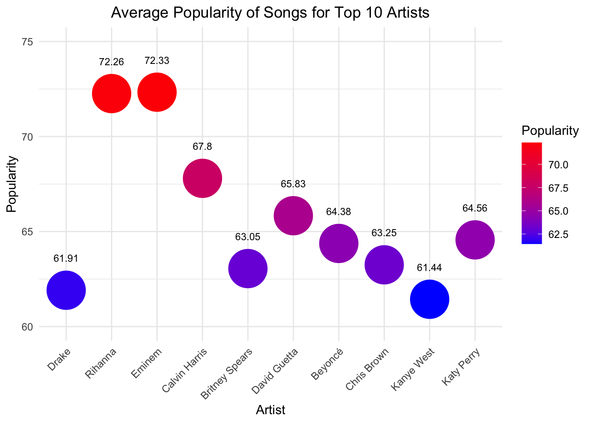

Data Story
Data Cleaning
I have cleaned the dataset by removing duplicate and NA values, as well as selecting only the relevant columns required for my data analysis.
You can view both original and cleaned datasets here:
The column “genre” lists the genres of each song, with one song having possibly more than one genre. This makes it hard for analysis when using the “genre” column.
Data Visualisation
Below, I will be analysing various song properties and their relationships with song popularity.
The main question I wish to answer is “What determines the extent of popularity of songs in Spotify?”
Songs Per Year
The bar plot below consolidates the number of songs released for each year, between 1998 and 2020. Hover over each respective bar to see the individual values.
4. Songs Per Artist - Top 50 Artists
The bar chart below consolidates data on the number of songs released by the top 50 artists featured in the dataset of top Spotify tracks, arranged from highest number of songs to lowest.
The artist with the most number of featured songs is Rihanna, with 25 songs.

5. Top 25 Songs Based On Popularity
Line graph features the top 25 songs from the dataset, arranged in descending order based on popularity level.
The most popular song is Sweater Weather, with a popularity rating of 89 out of 100.

6. Songs Containing Explicit Content
This simple pie chart below clearly illustrates the percentage of songs which contain explicit content.
72.4% , or the majority of the songs in this dataset, are explicit.

7. Year vs Explicit Content
The area plot below illustrates the relationship between the year of song published and explicit songs.

8. Popularity versus Explicit Songs
The bar plot below visualises the popularity of songs based on whether they are explicit or not.
To put in analysis